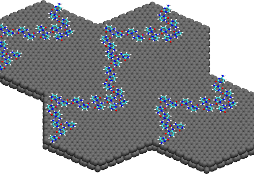
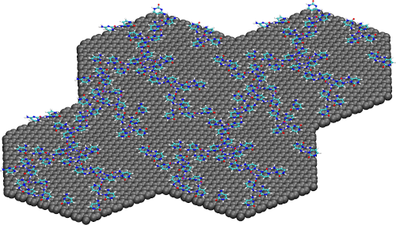
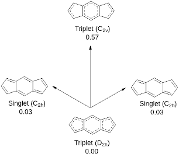

I am actively looking for Post-Doctoral Positions in Computational Chemsitry and (or) Computational Material Sciences. Any Potential Leads would be much appreciated.
Me (circa 2021)
~!
Welcome to My Virtual Estate. I am Hemanth Haridas
I am currently a Doctoral Student at Indian Institute of Technology Gandhinagar, working with Dr. Sairam S. Mallajosyula since 2018. I work on the development and benchmarking of
CHARMM (Chemistry at HARward Molecular Mechanics) FF parameters for 2D materials. I also work on the computational investigations of non-covalent interactions between 2D sheets and DNA,
to understand translocation mechanism of DNA through nanopores drilled on such materials.
Prior to Joining Indian Institute of Technology Gandhinagar, I earned my 5 year-Integrated M.Sc in Chemistry from Pondicherry University in 2018. My MSc thesis was focused on the
computational investigations of 2D topological insulators.
My Research interests are mainly focused on the development of FF parameters that conform to CHARMM parameterization stratergy, and computational investigations of novel 2D organic
materials with topologically non-trivial behaviour. You are welcome to read more about these here, here and here
.
Featured Research

Spontaneous Self-assembly of Cytosine Nucleobases absorbed over Graphene Surface.
In recent years graphene has attracted the attention of researchers as an atomistically thin solid state material to study the self-assembly of nucleobases. Non-covalent interactions between nucleobases and graphene sheet play a fundamental role in understanding the self-assembly of nucleobases on the graphene sheet. A fundamental understanding of the effect of molecular polarizability on these non-covalent interactions between the nucleobases and the underlying graphene sheet is absent in the literature. In this paper, we present the results from polarizable molecular dynamics simulation studies to understand the effect of polarization on the strength of non-covalent interactions. To this end, we report the development of drude parameters for describing polarizable graphene sheet. The developed parameters were used to study the self aggregation phenomenon of nucleobases on a graphene support. We observe a significant change in the interaction patterns upon inclusion of polarization into the system, with polarizable simulations yielding results that closely resemble experimental studies. Two of the key observations were the probability of formation of stacks in guanine rich systems, and the spontaneous formation of H-bonded structures over the graphene sheet,which alludes to the importance of the DNA sequence and composition. Both these effects were not observed in the additive simulations. The present study sheds light on the effect of polarization on the adsorption of DNA nucleobases on a graphene sheet, but the methodology can be extended to include a variety of small molecules and complete DNA strands.

2D Self-assembled Random Network formed by Cytosine Nucleobases at 0.75M Conc.
Nucleobases have attracted significant attention from the scientific community as a viable candidate for the formation of supramolecular assemblies. Significant research interest has been turned toward developing novel molecules based on nucleobase synthons for applications in a wide spectrum of disciplines. Self-assemblies of nucleobases on a solid support have been observed in experimental studies, but they have not been accurately captured by generalized additive force field molecular dynamics simulations. We show that a polarizable force field can accurately capture the spontaneous self-assembly of higher-order structures in cytosine nucleobases that cannot be captured by nonpolarizable force fields. A gradual transition from an ordered 2D network to a sizable disordered network of hydrogen-bonded structures was observed upon increasing the concentration of nucleobases from 0.25 to 0.75 M. A graphene sheet was found to exert a significant influence on the stabilization of self-assemblies formed by cytosine nucleobases mediated by the π–π interactions. This methodology can be extended to investigate the self-assemblies of other small molecules on graphene-based solid supports.

Possible Energy states for a s-indacene molecule
Organic electronic devices are sought after for their mechanical and electrical properties and economic viability. Recent advances in the literature point to a plethora of molecules synthesized for applications in organic electronics and solar cells. However, a complete understanding of the design principles for constructing such devices with tailor-made properties is absent in the literature. Herein, we report the computational investigation of s-indacene as a viable candidate for the construction of organic electronic devices. We also investigate the effect of molecular topology on the frontier energy levels of the s-indacene fragments and the possibility of tuning the frontier energy levels by a rational choice of substituents and bridging groups. The rationale behind the choice of s-indacene fragments as the basis for the construction of 2D organic electronic devices with tailor-made properties can be extended towards the construction of other 2D covalent organic frameworks with applications in organic electronics and spintronics.
Publications
2021
Polarization Influences the Evolution of Nucleobase-Graphene Interactions
Hemanth H and Sairam S. Mallajosyula; Nanoscale, 2021, 13, 4060-4072
2022
Capturing Concentration-Induced Aggregation of Nucleobases on a Graphene Surface through Polarizable Force Field Simulations
Hemanth H , Pradeep Kumar Yadav and Sairam S. Mallajosyula; JPCC, 2022, 126(31), 13122–13131
2021
Rational Construction of Organic Electronic Devices based on s-indacene fragments
Hemanth H ; ChemRxiv, 2021
Conferences and Workshops
2021
CECAM Virtual Winter School on Computational Chemistry
2020
International Conference on Nano Science and Nano Technology (ICONSAT); S N Bose National Centre for Basic Sciences, Kolkata
2019
Theoretical Chemistry Symposium (TCS); Birla Institute of Technology and Sciences (BITS), Pilani